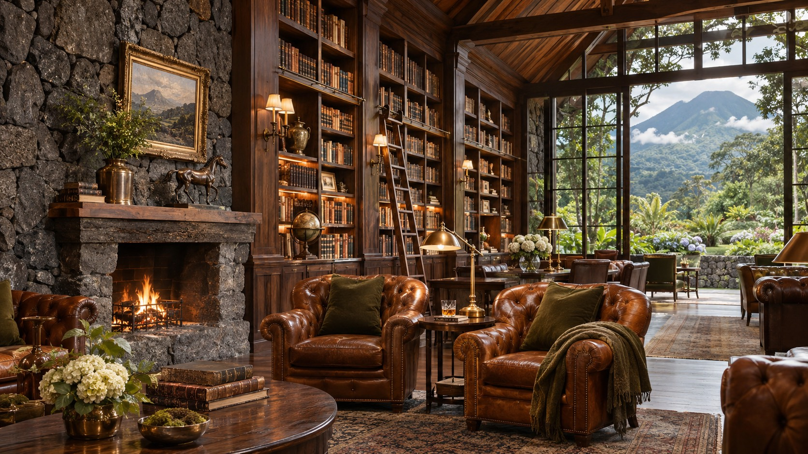
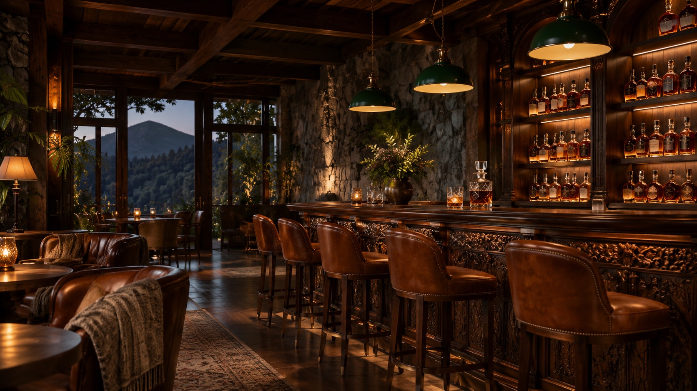
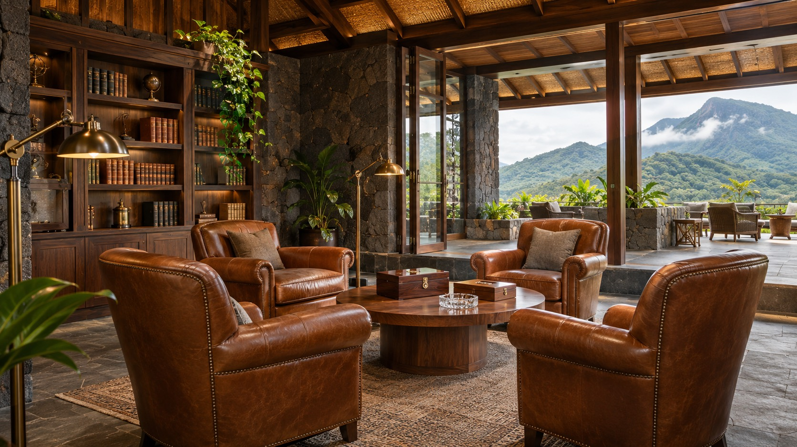
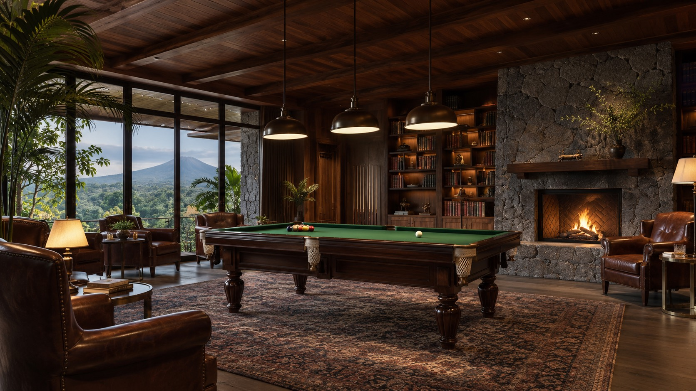
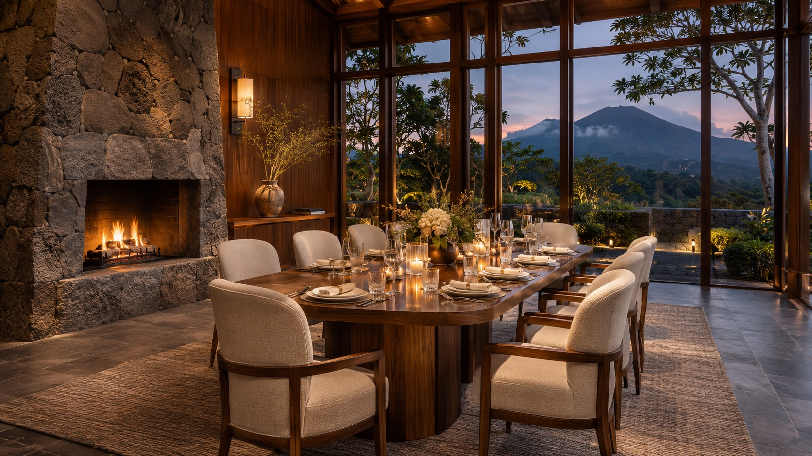

The 800 Club
Good company.
Rare pleasures.
A private mountain club for conversation, culture and the art of lingering.
The Mount Paradise vision
The 800 Club
Named for the setting above 800 meters, the 800 Club is envisioned as Mount Paradise’s intimate social address. Rich timber, leather chairs, bookshelves and attentive hospitality create a club with its own character. Its center of gravity is conversation, friendship and the pleasure of a place that feels familiar.

The whiskey room
A considered pour.
A longer conversation.
A dedicated members’ bar is envisioned around a carefully selected whiskey collection, classic cocktails and knowledgeable hosting. Small tastings and quiet evenings give the room a rhythm of its own.

The cigar lounge
Leather, books
and a little privacy.
A separate, dedicated cigar lounge brings deep leather armchairs, reading lamps and a sheltered terrace into a relaxed private setting. The design intention keeps this experience distinct from the wider dining and family spaces.

The club rooms
An unhurried
kind of competition.
Billiards, chess, a well-chosen book and the occasional spirited debate. These rooms are designed for members to enjoy familiar pursuits and discover shared interests.

Private dining & culture
A table with
something to say.
Intimate dinners, guest speakers, tastings and cultural evenings could form the club calendar. Membership would offer a continuing relationship with Mount Paradise, with wider facility access defined as the destination develops.
Belonging,
above all.
The 800 Club is a proposed membership concept. Its spaces, membership categories and access arrangements are still being shaped. Wellness and recreation have their own dedicated facilities; the club brings a more private social world to the mountain.